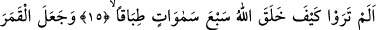
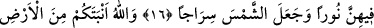
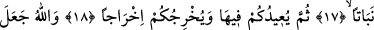
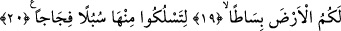
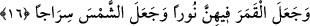

YERYÜZÜNÜ SİZİN İÇİN
BİR SERGİ YAPMIŞTIR
15. Görmediniz mi, Allah yedi göğü birbiriyle ahenktar olarak nasıl yaratmış!
16. Onların içinde ayı bir nûr kılmış, güneşi de bir çerağ yapmıştır.
17. Allah, sizi de yerden ot (bitirir) gibi bitirmiştir.
18. Sonra sizi yine oraya döndürecek ve sizi yeniden çıkaracaktır.
19. Allah, yeryüzünü sizin için bir sergi yapmıştır.
20. Tâ ki onda geniş yollar edinip dolaşabilesiniz diye,
Ey kavmim “görmediniz mi?” Buradaki soru edâtı, muhâtabı sorulan hususta ikrâr ve
kabûle sevketmek içindir. “Rü’yet/görmek” ise burada bilmek mânâsınadır. Belki onlar
ehlinden duymak sûretiyle bu gerçeği biliyorlardı. Veya “görmek” mânâsınadır. Buna
göre maksad Allah’ın mükemmel ilmine ve eşsiz kudretine delâlet eden yaratmasındaki
hârika gerçekleri müşâhede etmektir.
“Allah yedi göğü birbiriyle ahenktar olarak”, Mülk sûresinde geçtiği üzere bir
kısmını diğeriyle uyumlu olmak üzere üst üste “nasıl yaratmıştır.” Cenâb-ı Hak
insanları öldükten sonra tekrar dirilteceğine ve kendisinin muazzam bir kudret sâhibi
olduğuna dâir delillerin peşinden insanların kendi nefislerinden deliller getirdi. Çünkü
insanın nefsi kendisine en yakın olan nesnedir. Bunun peşinden de şimdi dış dünyadan
deliller getiriyor.
16. Onların içinde ayı bir nûr kılmış, güneşi de bir çerağ yapmıştır.
“Ay’ı onların içinde bir nur” yâni gecenin karanlığında yeryüzünü aydınlatan bir nur
yapmıştır. Ay, dünyaya en yakın semâda olduğu hâlde burada bütün yedi kat göğe nisbet
edilmiştir. Zira bütün semâlar şeffaftır, hiçbiri gerisinde olanı kapatmaz. Dolayısıyla
bütün semâlar sanki bir tek semâ imiş gibi görülür. Bunun zorunlu sonucu ise; bu